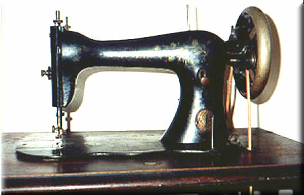

British-built 1887 Improved Family
This interesting machine was the forerunner of Singer's Model 15, which was probably the most successful machine of all time. The "Improved Family" was produced between 1879 and the early 1890's. The oscillating shuttle mechanism (see Shuttle Detail below) is somewhat unusual and complicated in operation and uses an unusually small bobbin. The backplate (see Backplate Detail below) is also unusual, stretching the whole length of the machine head. The serial number on this model is located on the bed behind the pillar.
